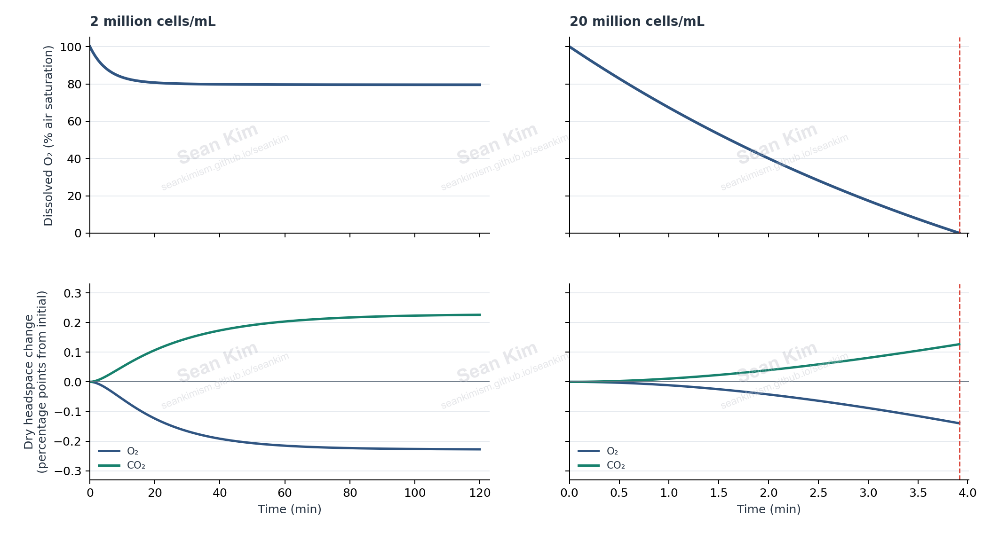
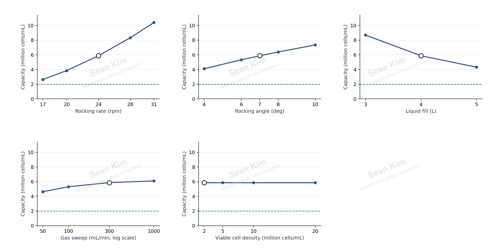
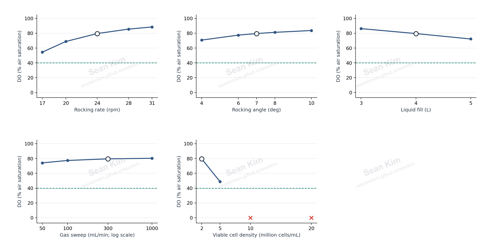
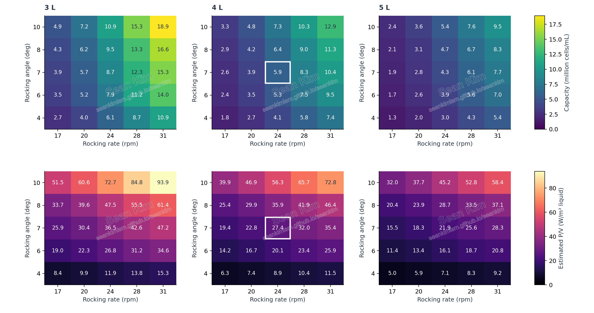
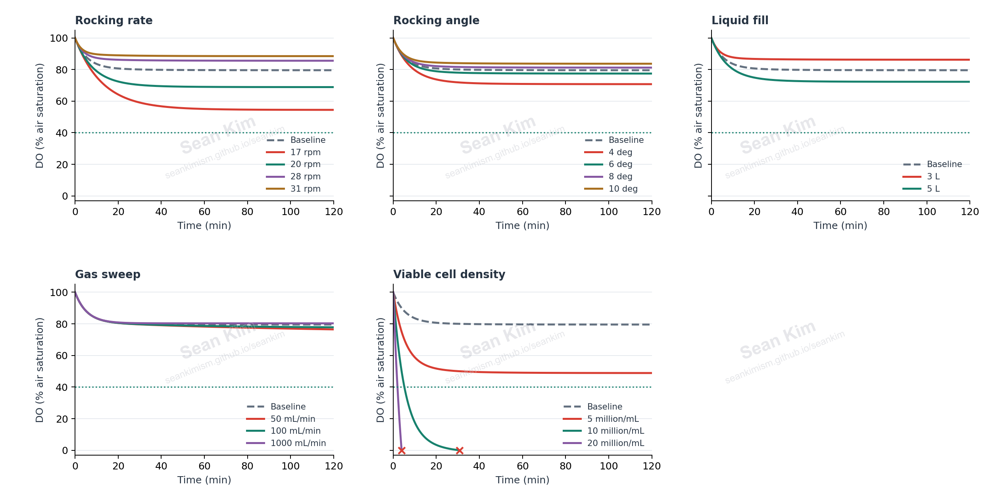
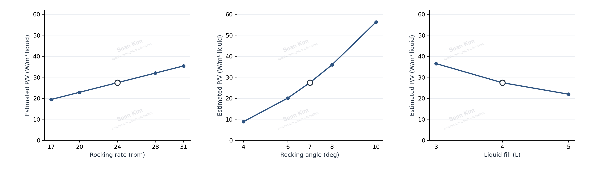

Saved simulation results · 1,200 parameter combinations · 300 operating points · 17 transient runs
Wave-bag parameter study
Explore how rocking rate, rocking angle, liquid fill, gas sweep and prescribed cell density change oxygen supply and dissolved oxygen. All cases use the same single nominal 10 L Cellbag geometry; liquid-fill changes are not a comparison of nominal bag sizes.
Starting point
| Rocking rate | 24 rpm |
|---|---|
| Rocking angle | 7 deg |
| Liquid fill | 4 L |
| Gas sweep | 300 mL/min |
| Viable cell density | 2 million cells/mL |
Temperature 37 °C; inlet O₂ 20.95%; inlet CO₂ 5%; qO₂ 5.5 pmol/(cell day); respiratory quotient 1; DO comparison threshold 40% air saturation.
Baseline prediction: steady DO 79.5% air saturation; oxygen capacity 5.87 million cells/mL at 40% DO; kLa 11.11 h⁻¹.
Uncalibrated power estimate: baseline P/V 27.41 W/m³ of working liquid (0.1097 W). This separate quasi-static calculation assumes that the liquid releases and dissipates its calculated potential energy twice per rocking cycle. It is a cycle-average proxy, not measured power, peak power or a rigorous lower bound. The assumed rectangular footprint does not resolve wave dynamics, resonance or flexible bag walls. It is not derived from the oxygen-transfer correlation and is not calibrated for scale-up.
Download all cases (CSV) · Power estimates for 75 mechanical conditions (CSV)


















Numeric power estimates
One parameter changes at a time; remaining settings stay at baseline. All power values are uncalibrated estimates per working liquid volume.
Show every one-factor setting
| Parameter | Setting | P/V (W/m³) | Total power (W) |
|---|---|---|---|
| Rocking rate (rpm) | 17 | 19.42 | 0.0777 |
| Rocking rate (rpm) | 20 | 22.85 | 0.0914 |
| Rocking rate (rpm) | 24 | 27.41 | 0.1097 |
| Rocking rate (rpm) | 28 | 31.98 | 0.1279 |
| Rocking rate (rpm) | 31 | 35.41 | 0.1416 |
| Rocking angle (degrees, half-amplitude) | 4 | 8.89 | 0.0356 |
| Rocking angle (degrees, half-amplitude) | 6 | 20.09 | 0.0804 |
| Rocking angle (degrees, half-amplitude) | 7 | 27.41 | 0.1097 |
| Rocking angle (degrees, half-amplitude) | 8 | 35.92 | 0.1437 |
| Rocking angle (degrees, half-amplitude) | 10 | 56.33 | 0.2253 |
| Liquid fill (L) | 3 | 36.51 | 0.1095 |
| Liquid fill (L) | 4 | 27.41 | 0.1097 |
| Liquid fill (L) | 5 | 21.93 | 0.1097 |
Assumptions and saved trajectories
The model treats the liquid and headspace as well mixed at fixed volume, temperature and pressure. Cell density and per-cell demand are prescribed and constant. It includes molecular CO₂, with no carbonate buffering or pH prediction. An integration stops early if oxygen depletion occurs. Tray heating, cell growth and resolved wave motion are outside this study.
Gas sweep enters the headspace, not a submerged sparger, and is expressed as dry standard mL/min at 0 °C and 1 atm. The 40% DO value is a screening threshold; no DO controller is active. Transient results describe the finite 120-minute window and need not equal the analytical steady state.
One-factor figures hold every other input at the baseline. Heatmaps vary rocking rate, angle and fill together, with baseline gas sweep. Range flags and case notes are retained in the downloadable summaries.
Individual transient result files (17)
- Rocking rate: 17 rpm (case_0121): completed; final DO 54.47%; end time 120.00 min
- Rocking rate: 20 rpm (case_0361): completed; final DO 68.86%; end time 120.00 min
- Rocking angle: 4 deg (case_0505): completed; final DO 70.74%; end time 120.00 min
- Rocking angle: 6 deg (case_0553): completed; final DO 77.44%; end time 120.00 min
- Liquid fill: 3 L (case_0585): completed; final DO 86.20%; end time 120.00 min
- Gas sweep: 50 mL/min (case_0593): completed; final DO 76.48%; end time 120.00 min
- Gas sweep: 100 mL/min (case_0597): completed; final DO 77.81%; end time 120.00 min
- Baseline (case_0601): completed; final DO 79.55%; end time 120.00 min
- Viable cell density: 5 million cells/mL (case_0602): completed; final DO 48.87%; end time 120.00 min
- Viable cell density: 10 million cells/mL (case_0603): oxygen_depleted; final DO 0.00%; end time 30.70 min
- Viable cell density: 20 million cells/mL (case_0604): oxygen_depleted; final DO 0.00%; end time 3.92 min
- Gas sweep: 1000 mL/min (case_0605): completed; final DO 80.31%; end time 120.00 min
- Liquid fill: 5 L (case_0617): completed; final DO 72.23%; end time 120.00 min
- Rocking angle: 8 deg (case_0649): completed; final DO 81.20%; end time 120.00 min
- Rocking angle: 10 deg (case_0697): completed; final DO 83.66%; end time 120.00 min
- Rocking rate: 28 rpm (case_0841): completed; final DO 85.56%; end time 120.00 min
- Rocking rate: 31 rpm (case_1081): completed; final DO 88.46%; end time 120.00 min